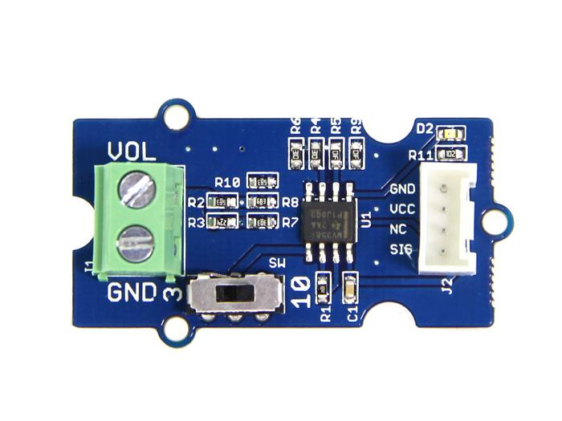
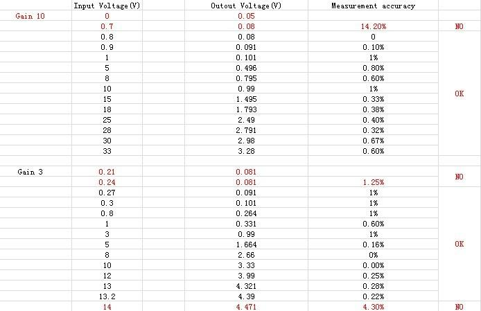

The Grove – Voltage Divider provides an interface for measuring external voltage, eliminating the need to connect a resistance to input interface. Besides, the voltage gain can select by dial switch. They are easy to use.
Model: POW05161P

| Item | Min | Typical | Max | Unit | ||
|---|---|---|---|---|---|---|
| Working Voltage | 4.7 | 5.0 | 5.3 | VDC | ||
| Measurement Accuracy | <=1 | % | ||||
| Extern Voltage Range | select 3 | 0.3 | / | 12.9 | V | |
| Select 10 | 1.0 | / | 43 | |||
| Dimension | 24X20 | mm | ||||
When measuring the external voltage, connect the external voltage to J1 and then connect the on-board Grove connector to analog port of Arduino/Seeeduino:
In order to test the precision of this module, I tested some voltage inputs and get the following data:

And When voltage divider output voltage is higher than VCC (The Grove Operating Voltage and reference of analog read), an indicator will light up to show you the error.
void setup(){
Serial.begin(9600);
}
void loop(){
long sensorValue=analogRead(A0);
long sum=0;
for(int i=0;i<1000;i++)
{
sum=sensorValue+sum;
sensorValue=analogRead(A0);
delay(2);
}
sum=sum/1000;
Serial.print("if you set the Gain to 10,the input voltage:");
Serial.println(10*sum*4980/1023.00);
Serial.print("if you set the Gain to 3,the input voltage:");
Serial.println(3*sum*4980/1023.00);
delay(1000);
}
Grove - Voltage Divider Eagle File
LMV358ID Datasheet
If you have questions or other better design ideas, you can go to our forum or wish to discuss.
Copyright (c) 2008-2016 Seeed Development Limited (www.seeedstudio.com / www.seeed.cc)